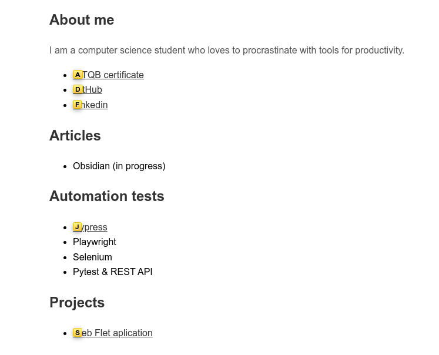

___ ___ ___ ___
/\__\ ___ /\__\ ___ /\__\ /\__\
/:/ / /\ \ /::| | /\ \ /:/ / /::| |
/:/ / \:\ \ /:|:| | \:\ \ /:/ / /:|:| |
/:/__/ ___ /::\__\ /:/|:|__|__ /::\__\ /:/ / ___ /:/|:|__|__
|:| | /\__\ __/:/\/__/ /:/ |::::\__\ __/:/\/__/ /:/__/ /\__\ /:/ |::::\__\
|:| |/:/ / /\/:/ / \/__/~~/:/ / /\/:/ / \:\ \ /:/ / \/__/~~/:/ /
|:|__/:/ / \::/__/ /:/ / \::/__/ \:\ /:/ / /:/ /
\::::/__/ \:\__\ /:/ / \:\__\ \:\/:/ / /:/ /
~~~~ \/__/ /:/ / \/__/ \::/ / /:/ /
\/__/ \/__/ \/__/
Skróty Vima dostępne w przeglądarce internetowej. Wystarczy zainstalować rozszerzenie Vimium. Nie będę omawiał skrótów, są rozpisane tutaj, ale jest coś co wyjątkowo mi się spodobało. Wszystkie linki na stronie oznaczają się skrótem po naciśnieciu klawisza 'f'. Aby 'kliknąć' w ten obiekt wystarczy wcisnąć przycisk na klawiaturze z odpowiadającą mu literą. 